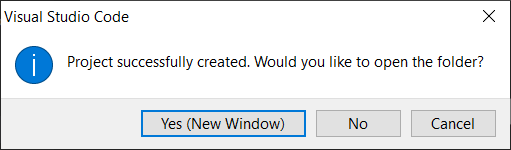
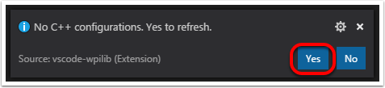

Creating your Benchtop Test Program (C++/Java)
Once everything is installed, we’re ready to create a robot program. WPILib comes with several templates for robot programs. Use of these templates is highly recommended for new users; however, advanced users are free to write their own robot code from scratch. This article walks through creating a project from one of the provided examples which has some code already written to drive a basic robot.
Important
This guide includes code examples that involve vendor hardware for the convenience of the user. In this document, PWM refers to the motor controller included in the KOP. The CTRE tab references the Talon FX motor controller (Falcon 500 motor), but usage is similar for TalonSRX and VictorSPX. The REV tab references the CAN SPARK MAX controlling a brushless motor, but it’s similar for brushed motor. There is an assumption that the user has already installed the required vendordeps and configured the device(s) (update firmware, assign CAN IDs, etc) according to the manufacturer documentation (CTRE REV).
Creating a New WPILib Project
Bring up the Visual Studio Code command palette with Ctrl+Shift+P. Then, type “WPILib” into the prompt. Since all WPILib commands start with “WPILib”, this will bring up the list of WPILib-specific VS Code commands. Now, select the “Create a new project” command:

This will bring up the “New Project Creator Window:”

The elements of the New Project Creator Window are explained below:
Project Type: The kind of project we wish to create. For this example, select Example
Language: This is the language (C++ or Java) that will be used for this project.
Project Base: This box is used to select the base class or example to generate the project from. For this example, select Getting Started
Base Folder: This determines the folder in which the robot project will be located.
Project Name: The name of the robot project. This also specifies the name that the project folder will be given if the Create New Folder box is checked.
Create a New Folder: If this is checked, a new folder will be created to hold the project within the previously-specified folder. If it is not checked, the project will be located directly in the previously-specified folder. An error will be thrown if the folder is not empty and this is not checked. project folder will be given if the Create New Folder box is checked.
Team Number: The team number for the project, which will be used for package names within the project and to locate the robot when deploying code.
Enable Desktop Support: Enables unit test and simulation. While WPILib supports this, third party software libraries may not. If libraries do not support desktop, then your code may not compile or may crash. It should be left unchecked unless unit testing or simulation is needed and all libraries support it. For this example, do not check this box.
Once all the above have been configured, click “Generate Project” and the robot project will be created.
Note
Any errors in project generation will appear in the bottom right-hand corner of the screen.
Opening The New Project
After successfully creating your project, VS Code will give the option of opening the project as shown above. We can choose to do that now or later by typing Ctrl+K then Ctrl+O (or just Command+O on macOS) and select the folder where we saved our project.
Click Yes I trust the authors.
Once opened we will see the project hierarchy on the left. Double clicking on the file will open that file in the editor.

C++ Configurations (C++ Only)
For C++ projects, there is one more step to set up IntelliSense. Whenever we open a project, we should get a pop-up in the bottom right corner asking to refresh C++ configurations. Click “Yes” to set up IntelliSense.
Imports/Includes
7import edu.wpi.first.wpilibj.TimedRobot;
8import edu.wpi.first.wpilibj.Timer;
9import edu.wpi.first.wpilibj.XboxController;
10import edu.wpi.first.wpilibj.drive.DifferentialDrive;
11import edu.wpi.first.wpilibj.motorcontrol.PWMSparkMax;
5#include <frc/TimedRobot.h>
6#include <frc/Timer.h>
7#include <frc/XboxController.h>
8#include <frc/drive/DifferentialDrive.h>
9#include <frc/motorcontrol/PWMSparkMax.h>
import edu.wpi.first.wpilibj.Joystick;
import edu.wpi.first.wpilibj.TimedRobot;
import edu.wpi.first.wpilibj.Timer;
import edu.wpi.first.wpilibj.drive.DifferentialDrive;
import com.ctre.phoenix.motorcontrol.can.WPI_TalonFX;
#include <frc/Joystick.h>
#include <frc/TimedRobot.h>
#include <frc/Timer.h>
#include <frc/drive/DifferentialDrive.h>
#include <ctre/phoenix/motorcontrol/can/WPI_TalonFX.h>
import com.revrobotics.CANSparkMax;
import com.revrobotics.CANSparkMaxLowLevel.MotorType;
import edu.wpi.first.wpilibj.TimedRobot;
import edu.wpi.first.wpilibj.Timer;
import edu.wpi.first.wpilibj.XboxController;
import edu.wpi.first.wpilibj.drive.DifferentialDrive;
#include <frc/TimedRobot.h>
#include <frc/Timer.h>
#include <frc/XboxController.h>
#include <frc/drive/DifferentialDrive.h>
#include <frc/motorcontrol/PWMSparkMax.h>
#include <rev/CANSparkMax.h>
Our code needs to reference the components of WPILib that are used. In C++ this is accomplished using #include statements; in Java it is done with import statements. The program references classes for Joystick (for driving), PWMSparkMax / WPI_TalonFX / CANSparkMax (for controlling motors), ``TimedRobot (the base class used for the example), Timer (used for autonomous), and DifferentialDrive (for connecting the joystick control to the motors).
Defining the variables for our sample robot
19public class Robot extends TimedRobot {
20 private final PWMSparkMax m_leftDrive = new PWMSparkMax(0);
21 private final PWMSparkMax m_rightDrive = new PWMSparkMax(1);
22 private final DifferentialDrive m_robotDrive = new DifferentialDrive(m_leftDrive, m_rightDrive);
23 private final XboxController m_controller = new XboxController(0);
24 private final Timer m_timer = new Timer();
25
26 /**
27 * This function is run when the robot is first started up and should be used for any
28 * initialization code.
29 */
30 @Override
31 public void robotInit() {
32 // We need to invert one side of the drivetrain so that positive voltages
33 // result in both sides moving forward. Depending on how your robot's
34 // gearbox is constructed, you might have to invert the left side instead.
35 m_rightDrive.setInverted(true);
36 }
12 public:
13 Robot() {
14 // We need to invert one side of the drivetrain so that positive voltages
15 // result in both sides moving forward. Depending on how your robot's
16 // gearbox is constructed, you might have to invert the left side instead.
17 m_right.SetInverted(true);
18 m_robotDrive.SetExpiration(100_ms);
19 m_timer.Start();
20 }
50 private:
51 // Robot drive system
52 frc::PWMSparkMax m_left{0};
53 frc::PWMSparkMax m_right{1};
54 frc::DifferentialDrive m_robotDrive{m_left, m_right};
55
56 frc::XboxController m_controller{0};
57 frc::Timer m_timer;
58};
public class Robot extends TimedRobot {
private final WPI_TalonFX m_leftDrive = new WPI_TalonFX(1);
private final WPI_TalonFX m_rightDrive = new WPI_TalonFX(2);
private final DifferentialDrive m_robotDrive = new DifferentialDrive(m_leftDrive, m_rightDrive);
private final Joystick m_stick = new Joystick(0);
private final Timer m_timer = new Timer();
public:
Robot() {
m_right.SetInverted(true);
m_robotDrive.SetExpiration(100_ms);
// We need to invert one side of the drivetrain so that positive voltages
// result in both sides moving forward. Depending on how your robot's
// gearbox is constructed, you might have to invert the left side instead.
m_timer.Start();
}
private:
// Robot drive system
ctre::phoenix::motorcontrol::can::WPI_TalonFX m_left{1};
ctre::phoenix::motorcontrol::can::WPI_TalonFX m_right{2};
frc::DifferentialDrive m_robotDrive{m_left, m_right};
frc::Joystick m_stick{0};
frc::Timer m_timer;
public class Robot extends TimedRobot {
private final CANSparkMax m_leftDrive = new CANSparkMax(1, MotorType.kBrushless);
private final CANSparkMax m_rightDrive = new CANSparkMax(2, MotorType.kBrushless);
private final DifferentialDrive m_robotDrive = new DifferentialDrive(m_leftDrive, m_rightDrive);
private final XboxController m_controller = new XboxController(0);
private final Timer m_timer = new Timer();
Robot() {
// We need to invert one side of the drivetrain so that positive voltages
// result in both sides moving forward. Depending on how your robot's
// gearbox is constructed, you might have to invert the left side instead.
m_right.SetInverted(true);
m_robotDrive.SetExpiration(100_ms);
m_timer.Start();
}
private:
// Robot drive system
rev::CANSparkMax m_left{1, rev::CANSparkMax::MotorType::kBrushless};
rev::CANSparkMax m_right{2, rev::CANSparkMax::MotorType::kBrushless};
frc::DifferentialDrive m_robotDrive{m_left, m_right};
frc::XboxController m_controller{0};
frc::Timer m_timer;
The sample robot in our examples will have a joystick on USB port 0 for arcade drive and two motors on PWM ports 0 and 1 (Vendor examples use CAN with IDs 1 and 2). Here we create objects of type DifferentialDrive (m_robotDrive), Joystick (m_stick) and Timer (m_timer). This section of the code does three things:
Defines the variables as members of our Robot class.
Initializes the variables.
Note
The variable initializations for C++ are in the private section at the bottom of the program. This means they are private to the class (Robot). The C++ code also sets the Motor Safety expiration to 0.1 seconds (the drive will shut off if we don’t give it a command every .1 seconds) and starts the Timer used for autonomous.
Robot Initialization
@Override
public void robotInit() {}
void RobotInit() {}
The RobotInit method is run when the robot program is starting up, but after the constructor. The RobotInit for our sample program doesn’t do anything. If we wanted to run something here we could provide the code above to override the default).
Simple Autonomous Example
38 /** This function is run once each time the robot enters autonomous mode. */
39 @Override
40 public void autonomousInit() {
41 m_timer.restart();
42 }
43
44 /** This function is called periodically during autonomous. */
45 @Override
46 public void autonomousPeriodic() {
47 // Drive for 2 seconds
48 if (m_timer.get() < 2.0) {
49 // Drive forwards half speed, make sure to turn input squaring off
50 m_robotDrive.arcadeDrive(0.5, 0.0, false);
51 } else {
52 m_robotDrive.stopMotor(); // stop robot
53 }
54 }
22 void AutonomousInit() override { m_timer.Restart(); }
23
24 void AutonomousPeriodic() override {
25 // Drive for 2 seconds
26 if (m_timer.Get() < 2_s) {
27 // Drive forwards half speed, make sure to turn input squaring off
28 m_robotDrive.ArcadeDrive(0.5, 0.0, false);
29 } else {
30 // Stop robot
31 m_robotDrive.ArcadeDrive(0.0, 0.0, false);
32 }
33 }
The AutonomousInit method is run once each time the robot transitions to autonomous from another mode. In this program, we restart the Timer in this method.
AutonomousPeriodic is run once every period while the robot is in autonomous mode. In the TimedRobot class the period is a fixed time, which defaults to 20ms. In this example, the periodic code checks if the timer is less than 2 seconds and if so, drives forward at half speed using the ArcadeDrive method of the DifferentialDrive class. If more than 2 seconds has elapsed, the code stops the robot drive.
Joystick Control for Teleoperation
56 /** This function is called once each time the robot enters teleoperated mode. */
57 @Override
58 public void teleopInit() {}
59
60 /** This function is called periodically during teleoperated mode. */
61 @Override
62 public void teleopPeriodic() {
63 m_robotDrive.arcadeDrive(-m_controller.getLeftY(), -m_controller.getRightX());
64 }
35 void TeleopInit() override {}
36
37 void TeleopPeriodic() override {
38 // Drive with arcade style (use right stick to steer)
39 m_robotDrive.ArcadeDrive(-m_controller.GetLeftY(),
40 m_controller.GetRightX());
41 }
Like in Autonomous, the Teleop mode has a TeleopInit and TeleopPeriodic function. In this example we don’t have anything to do in TeleopInit, it is provided for illustration purposes only. In TeleopPeriodic, the code uses the ArcadeDrive method to map the Y-axis of the Joystick to forward/back motion of the drive motors and the X-axis to turning motion.
Test Mode
66 /** This function is called once each time the robot enters test mode. */
67 @Override
68 public void testInit() {}
69
70 /** This function is called periodically during test mode. */
71 @Override
72 public void testPeriodic() {}
43 void TestInit() override {}
44
45 void TestPeriodic() override {}
Test Mode is used for testing robot functionality. Similar to TeleopInit, the TestInit and TestPeriodic methods are provided here for illustrative purposes only.
Deploying the Project to a Robot
Please see the instructions here for deploying the program onto a robot.